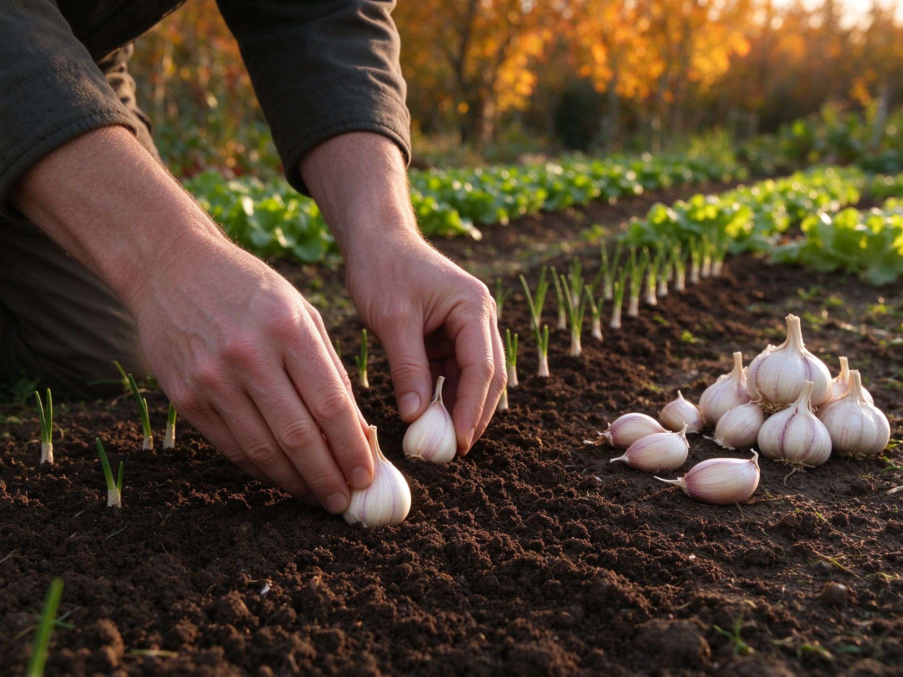

How to Grow Garlic: Plant in Fall for a Summer Harvest
Most garden vegetables are planted in spring. Garlic is the delicious exception: you plant it in fall, let it sit through winter, and harvest big, flavorful heads the following summer. It's one of the easiest and most satisfying crops a beginner can grow — a single planted clove turns into a whole bulb, then dozens of cloves, with almost no daily fuss.
Why Garlic Is Planted in Fall
Garlic needs a period of cold (vernalization) to form a proper bulb. When you plant cloves in fall, they grow a few roots, go dormant over winter, then come roaring back in early spring — using the cold spell to "decide" to make a head of cloves instead of just leaves. Fall planting also means an earlier, bigger harvest the next year than spring planting usually gives. Aim to plant about 2–4 weeks before your ground freezes hard, so the cloves can root in before winter truly arrives.
Softneck vs. Hardneck: Which to Choose
- Hardneck — best for cold climates and rich, bold flavor. It grows a curling flower stalk (a scape) you snap off in early summer and eat. Stores for a few months.
- Softneck — the supermarket type, mild and easy to braid, stores for many months. Best for warmer, milder-winter regions.
If you're not sure, start with a variety known to grow well in your area — local nurseries and farmers' markets sell garlic explicitly for planting. Never plant supermarket garlic if you can avoid it: it's often treated to prevent sprouting and may carry disease.
Prepare the Soil
Garlic is not fussy, but it loves loose, fertile, well-drained soil with a near-neutral to slightly acid pH (6.0–7.0). Before planting, work in a couple inches of finished compost — the same principle as in our how to improve garden soil guide — and remove any big stones or clumps that would block the cloves. If your soil is heavy clay or constantly soggy, grow garlic in a raised bed where drainage is easier to control. Good homemade compost is the best, free-est fertilizer there is (see how to compost at home).
How to Plant, Step by Step
- Break the bulb into cloves a day or two before planting. Keep the papery skin on each clove; it protects it. Use the biggest, plumpest cloves — small ones make small bulbs.
- Plant each clove pointy-end up, flat root-end down, about 2–3 inches deep. In cold climates plant a little deeper; in mild ones, slightly shallower.
- Space them 4–6 inches apart in rows 12–18 inches apart, so each plant has room to form a full head.
- Water in well right after planting so soil settles around the cloves.
- Mulch with 2–4 inches of straw, leaves, or shredded bark. This insulates the bed, smothers winter weeds, and keeps soil from freezing and thawing in cycles.
Caring for Garlic Through the Seasons
Winter
After planting, you can mostly forget it. The mulch does the work. If you get a week of unseasonably warm weather and see sprouts, don't worry — garlic is very cold-hardy and will be fine.
Spring
In early spring, green shoots emerge. Water deeply once a week if rain is scarce, but don't overdo it — soggy soil rots bulbs. Side-dress lightly with compost or a balanced organic fertilizer a few weeks after growth starts. Pull any weeds, and re-mulch if the bed is bare.
Scapes (hardneck only)
In early summer, hardneck garlic sends up a curled green stalk called a scape. Snap or cut it off once it loops — this tells the plant to put energy into the bulb instead of a flower. Scapes are delicious chopped into stir-fries, pesto, or scrambled eggs, so it's a win-win.
When and How to Harvest
Garlic is ready when the lower leaves turn brown but a few upper leaves are still green — usually mid-summer, about 7–9 months after planting. Gently loosen the soil with a fork and lift the bulbs; don't pull by the stems or they'll snap. Shake off loose soil but don't wash the heads.
Then cure them: hang the plants or lay them on a rack in a dry, shaded, well-ventilated spot for 2–4 weeks until the outer skin is papery and the necks are dry. Cured garlic keeps for months in a cool, dark, dry place — a pantry shelf is perfect.
Common Problems, Solved Simply
- Small bulbs — usually too little sun (garlic needs full sun), soil too dry, or cloves planted too close together.
- Rotting cloves — usually too much water or poor drainage; plant in a raised bed or lighter soil.
- No bulb, just leaves — often planted in spring without enough cold, or harvested too early.
- Rust spots on leaves — a fungal issue common in wet years; keep foliage dry by watering at the base and don't plant garlic in the same spot every year.
Garlic rewards patience. Plant a bed in fall, do almost nothing all winter, and next summer you'll pull up fat, fragrant heads that cost a fortune at the store — and you'll know exactly how they were grown.